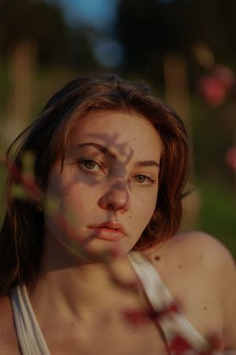

Piacere di conoscerti lettore,
sono Caterina, ho 22 anni, studio a Bologna dal 2019 e dopo varie peripezie frequento il DAMS, specializzandomi in cinema.
Sono lusingata di far parte del progetto “punti di vista” che mi ha permesso di condividere la cosa più intima che ho:
il mio modo di osservare le cose.
Ho sofferto questa città tanto quanto l’ho amata e attraverso questi brevi testi vorrei aiutare chi spesso si sente senza parole e sopraffatto a ritrovarle.
Molte volte mi sono sentita inerme e l’unico modo di affrontarlo è stato uscire e immaginare di guardare in faccia ciò che mi faceva male.
Questa è una piccola parte della mia vita che ho impiegato a condannare o assolvere luoghi,
questa sono io che comunque li ho vissuti tutti.
Grazie a Letizia che ha visto in me qualcosa di speciale,
grazie a Nicoló che la sostiene e la motiva in tutto.